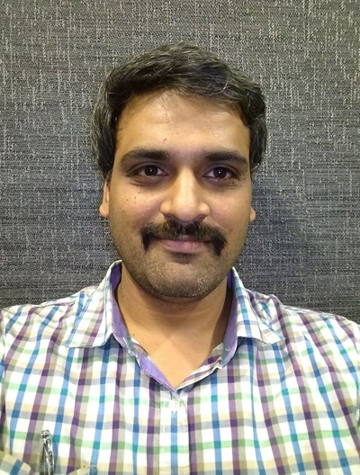

Personal Details
Dr. Srikanth's research interests include rare event methods and understanding phase behavior of metal alloy nanoparticles. He completed his Ph.D. in June 2018. Srikanth has received the best Ph.D. - RG Manudhane PhD excellence award (2018), Garuda Challenge Award at Parallel Computing Technologies (PARCOMPTECH - 2013) Centre for Development of Advanced Computing (CDAC) Bengaluru, Best Paper Award at VIth International Conference on Advances in Energy Research (ICAER) 2017, IIT Bombay, and Second Prize in poster presentation at Research Scholars' Confluence and Alumni Meet 2017, IIT Bombay.
Office: Department of Chemical Engineering, Manipal Institute of Technology, Manipal, Karnataka, India - 576 104
Phone: +91-9490940904
Email: srikanth.divi@manipal.edu
Web Profiles:
GitHub |
LinkedIn |
Manipal Profile |
Portfolio |
IITB Profile

Education
-
Ph.D., Chemical Engineering (June 2018)
IIT Bombay, Mumbai
R.G. Manudhane PhD Excellence Award for outstanding Ph.D. thesis. -
M.E., Chemical Engineering (2011)
BITS, Pilani - K. K. Birla Goa Campus, Goa -
B.Tech., Chemical Engineering (2009)
B. V. Raju Institute of Technology, Hyderabad (JNTUH)
Awards & Achievements
- R.G. Manudhane PhD Excellence Award (2018) - For outstanding Ph.D. thesis, Department of Chemical Engineering, IIT Bombay.
- Garuda Challenge Award (2013) - At Parallel Computing Technologies (PARCOMPTECH-2013), Centre for Development of Advanced Computing (CDAC), Bengaluru.
- Best Paper Award (2017) - VIth International Conference on Advances in Energy Research (ICAER 2017), IIT Bombay.
- Second Prize in Poster Presentation (2017) - Research Scholars' Confluence and Alumni Meet (ResConAM 2017), IIT Bombay.
Work Experience & Responsibilities
Current Responsibilities
- Newsletter Editor: TEMPUS, Newsletter for Department of Chemical Engineering, MIT.
- Faculty Coordinator: B.Tech. Project Work / Practice School.
- High-Performance Computing Coordinator: Instituting servers, workstations, and cloud-based HPC facilities with GPUs.
- Industry Advisory Committee Coordinator: Academia-industry collaborations for internships, training, placements, conferences, faculty development programs/exchanges.
- Event Organizer: Schrodinger Material Science Workshops, JMP Expert Talk Series, CDAC HPC Training Sessions.
Professional Experience
-
Aug-2021 to Present
Assistant Professor
Department of Chemical Engineering, Manipal Institute of Technology, Manipal, India. -
Post-Doctoral
Post-Doctoral Research Associate
Prof. Michail Stamatakis group, Department of Chemical Engineering, University College London, Bloomsbury, London, UK.
Contributed to developing and implementing algorithms for kinetic Monte-Carlo (KMC) simulations of reactions on catalytic surfaces. Developed the RI algorithm method for pattern recognition and benchmarked in-house Zacros code. -
Previous Roles
Project Assistant
Department of Chemical Engineering, BITS, Pilani K. K. Birla Goa Campus
Professional Affiliations
- Lifetime Associate Member of Indian Institute of Chemical Engineers (IIChE) – LAM41819
Research Work & Interests
My research focuses extensively on rare event methods and understanding phase behavior of metal alloy nanoparticles, leveraging multiscale modeling, molecular dynamics, and kinetic Monte Carlo simulations to understand the thermodynamic and kinetic behavior of complex chemical systems.
PhD Thesis (Advisor: Prof. Abhijit Chatterjee, IIT Bombay)
-
Nano-thermodynamic model to predict species distribution in multi-metal alloy nanoparticles
Understanding species segregation in nanoparticles and assessing surface and bulk composition are exceptionally challenging. Developed a size-independent nano-thermodynamic model to capture species distribution information at surface facets (111 and 100), edge/vertex sites, and bulk sites, enabling predictions for large nanoparticles using small nanoparticle composition data. -
Employed a tunable mixing rule to obtain accurate interatomic potentials for binary alloys
A new interatomic potential form for the embedded-atom method (EAM) was employed to improve the contribution of cross-potential interactions. Fitted with experimental heats of mixing data, this accurately captured mixing behavior, segregation, and thermodynamic nature in binary and ternary metal alloys. -
Accelerating rare events using temperature-programmed molecular dynamics (TPMD)
Conventional molecular dynamics (MD) techniques have drawbacks accessing large timescales. Developed the TPMD method to activate rare events at higher incremented temperatures, observing a speedup of 10,000 times for the Ag trimer/Ag(001) surface compared to conventional MD. -
Understanding atomic processes and morphology during silicon thin film growth
Implemented Parallel replica molecular dynamics (PRMD) to understand the evolution of Si thin films. Identified many concerted atom moves, along with hop, exchange, and diffusion events at the atomic length and timescales relevant to modern electronics manufacturing.
Post-Doctoral Work (Advisor: Prof. Michail Stamatakis, UCL)
-
Improving pattern recognition speed with new algorithms in KMC software Zacros
Contributed to developing algorithms for kinetic Monte-Carlo (KMC) simulations of reactions on catalytic surfaces, specifically creating the RI algorithm method for pattern recognition.
Projects & Code Repositories
- sim-codes: A repository containing molecular dynamics, accelerated molecular dynamics, and Monte Carlo schemes derived from my PhD research.
Publications & Presentations
Journal Publications
- 1. S.Y. Udaykumar, J. Carpenter, S. Divi, N.K. Das, S.B. K, A.K. Vatti, T. Banerjee, "Extraction of Lithium from an Aqueous Solution Using a Hydrophobic Deep Eutectic Solvent: A Combined Experimental and Classical Molecular Dynamics Study", Ind. Eng. Chem. Res. 2026, 65, 1, 799-808. DOI
- 2. G.N. Mathias, K.V.K. Goud, S. Divi, A.K. Vatti, J. Carpenter, S. Manickam, "Encapsulation of curcumin in groundnut oil-in-water (O/W) nanoemulsions: Experimental analysis and molecular dynamics simulations", Ultrasonics Sonochemistry, 2025. DOI
- 3. Y.U. Shamanth, P.J. Boruah, A.K. Vatti, S. Divi, T. Banerjee, "Lithium extraction using ionic liquids: Insights from quantum chemical and molecular dynamics simulations", Journal of Ionic Liquids, 2025. DOI
- 4. A.K. Vatti, S. Divi, P. Dey, "Effectiveness of inhibitors to prevent asphaltene aggregation: Insights from Atomistic and Molecular Simulations", The Journal of Chemical Physics, 2024. DOI
- 5. S. Divi et al., "Modelling of Prednisolone Drug Encapsulation in Poly(Lactic-co-Glycolic Acid) Polymer Carrier Using Molecular Dynamics Simulations", Journal of Pharmaceutical Innovation 19.6, 2024. DOI
- 6. S. Divi, A. Chatterjee, "Investigating Factors Affecting Mixing Patterns in Ternary Metal Alloy Nanoparticles", Advances in Energy Research, 1, 261-269, 2020. DOI
- 7. M.S.P. Jagannath, S. Divi, A. Chatterjee, "Kinetic Map for Destabilization of Pt-Skin Au Nanoparticles Via Atomic Scale Rearrangements", Journal of Physical Chemistry C, 122, 26214-26225, 2018. DOI
- 8. S. Divi, A. Chatterjee, "Generalized Nano-thermodynamic Model for Capturing Size-dependent Segregation in Multi-Metal Alloy Nanoparticles", RSC Advances, 8 (19), 10409-10424, 2018. DOI
- 9. S. Divi, G Agrahari, S R Kadulkar, S Kumar, A. Chatterjee, "Improved Prediction of Heat of Mixing and Segregation in Metallic Alloys Using Tunable Mixing Rule for Embedded Atom Method", Modelling and Simulation in Materials Science and Engineering, 25(8), 085011, 2017. DOI
- 10. S. Divi, A. Chatterjee, "Understanding Segregation Behavior in AuPt, NiPt, and AgAu Bimetallic Nanoparticles Using Distribution Coefficients", Journal of Physical Chemistry C, 120(48), 27296-27306, 2016. DOI
- 11. S. Divi, A. Chatterjee, "Study of Silicon Thin Film Growth at High Deposition Rates Using Parallel Replica Molecular Dynamics Simulations", Energy Procedia 54, 270-280, 2014. DOI
- 12. S. Divi, A. Chatterjee, "Accelerating rare events while overcoming the low-barrier problem using a temperature program", The Journal of Chemical Physics 140 (18), 184116, 2014. DOI
- 13. S. Divi, A. Chatterjee, "Investigating Factors Affecting Mixing Patterns in Ternary Metal Alloy Nanoparticles", Proceedings of VIth International Conference on Advances in Energy Research, IIT Bombay, 2017.
- 14. S. Divi, A. Chatterjee, "Parallel Replica Molecular Dynamics Simulations of Silicon Thin Film Growth", Proceedings of IVth International Conference on Advances in Energy Research, 721-728, IIT Bombay, 2013.
Selected Professional Presentations
- Machine Learning for Accelerated Discovery of Hydrogen Storage Materials, INCEEE 2025, NIT Warangal.
- Simulation Studies of Functionalized Boron and Nitrogen Based Nanomaterials for Enhanced Hydrogen Storage, SPHERE Symposium, PCCP 2025, IISc Bengaluru.
- A Computational Method to Capture Segregation & Compute Compositions in Alloy Nanoparticle, Materials, and Molecular Modelling Hub Conference 2018, Thomas Young Centre, London, UK.
- Nano-thermodynamic Model to Predict Species Compositions for Binary/Ternary Alloy Nanoparticles. Outstanding Young Chemical Engineers (OYCE) 2018, Mumbai.
- Investigating Factors Affecting Mixing Patterns in Ternary Metal Alloy Nanoparticles. ICAER 2017, IIT Bombay. Won Best Paper Award.
- A Thermodynamic Model to Understand Segregation Behavior in Bimetallic Nanoparticles. ResConAM 2017, IIT Bombay.
- Understanding Segregation Behavior in AuPt, NiPt, and AgAu Bimetallic Nanoparticles. ResConAM 2017, IIT Bombay. Won Second Prize.
- Mixing Behavior in AuPt Bimetallic Nanoparticles / Improved Embedded Atom Method for Bimetallic Alloys. AIChE Annual Meeting 2016, San Francisco, USA.
- Understanding Atomic Structures & Processes During Silicon Thin Film Growth Using Massively Parallel Molecular Simulations. PARCOMPTECH-2013, CDAC, Bengaluru. Won Garuda Challenge Award.
Academic & Teaching Experience
Theory Courses Taught
- Multiscale Molecular Simulations (Spring 2024)
- Computational Methods in Chemical Engineering (Autumn 2023)
- Mass Transfer - 1 (Spring 2022, Spring 2023, Autumn 2023)
- Chemical Reaction Engineering (Autumn 2021, Autumn 2022)
- Momentum Transfer & Particle Technology (Spring 2022)
Laboratory Courses
- Numerical Methods for Chemical Engineers Lab (Spring 2023, Spring 2024)
- Process Modeling & Simulations Lab (Autumn 2021, Autumn 2022, Autumn 2023)
- Computational Methods in Chemical Engineering Lab (Autumn 2023)
- Momentum Transfer & Particle Technology Lab (Spring 2023)
- Process Plant Simulation Lab (CHEMCAD)
- Transport Phenomena Lab (COMSOL Multiphysics)
- Process Control / Heat Transfer / Fluid Flow Operations Labs
Teaching Assistantships
- IIT Bombay: Teaching Assistant, Department of Chemical Engineering.
- IIT Kanpur: Teaching Assistant, Department of Chemical Engineering.
Administrative Roles
- Team Leader for Logistics and Finance, Alumni Affairs Division (AAD), BITS, Pilani.
- Team Leader System Administrator, Alumni Affairs Division (AAD), BITS, Pilani.